そふとくりーむぺろぺろ
あしゅりんぺろぺろ
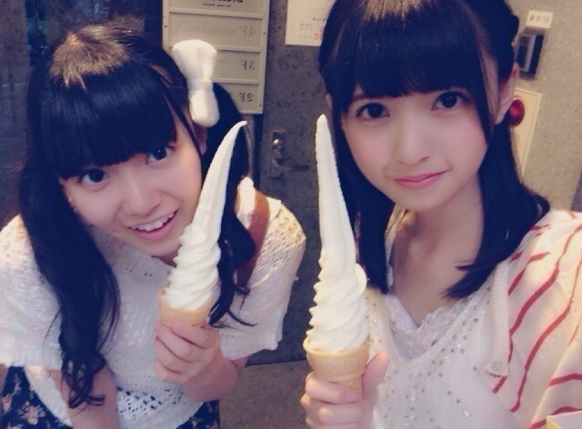
次回の乃木ののは
齋藤飛鳥ちゃん
川後陽菜ちゃん です☆
お楽しみに！
乃木ののから特別企画のお知らせ((( ˆωˆ )))
乃木坂46の「の」で喋って欲しい
トークテーマを募集します
あれ、これふつおたコーナーと同じじゃない？と
思ったそこのあなた！！
ちゃいます！同じじゃないです！ちゃうんです！
今回は特別企画とゆーことで
「喋って欲しいメンバーのリクエスト」もします！
詳しくは
乃木坂46の「の」公式サイトに
アクセスしてみてください☆
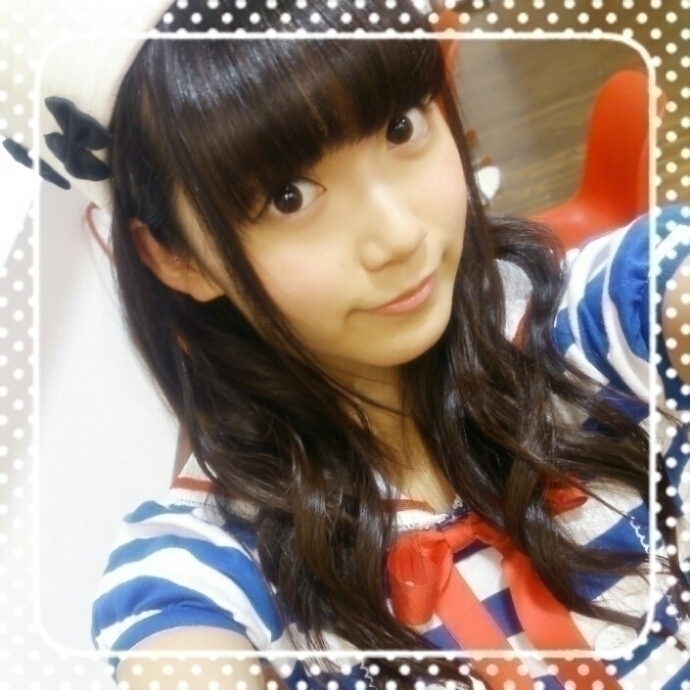
生写真「マリン」
8月2日は個別握手会！
1部～4部に参加するよ(＊^ω^＊)
1部に来てくれるひとは
お寝坊しちゃだめだからねー？
4部に来てくれるひとは
ひめたん4部になったの最近だから
時間間違えないように気を付けてねー
久々の東京ビッグサイト
楽しみに待ってます♡
さらに乃木坂46SHOW第3弾オンエア日！
握手会行くぜよってひとは
忘れずに録画してからおうち出るんだよー
お留守番ちーむのひとは
ぜひ画面越しのひめたんに
手を振ってみてくださいにゃ⊂( ˆoˆ )⊃
あ、明日は金曜日だから
のぎ天更新日だね！
もう#4ですって、はやーい！
観たら感想まってるよー
#3まだ観てないぞーってゆひともはやく観てねー
ちなみにひめたんまだ観てない( ´;O;` )うう
ぴーす
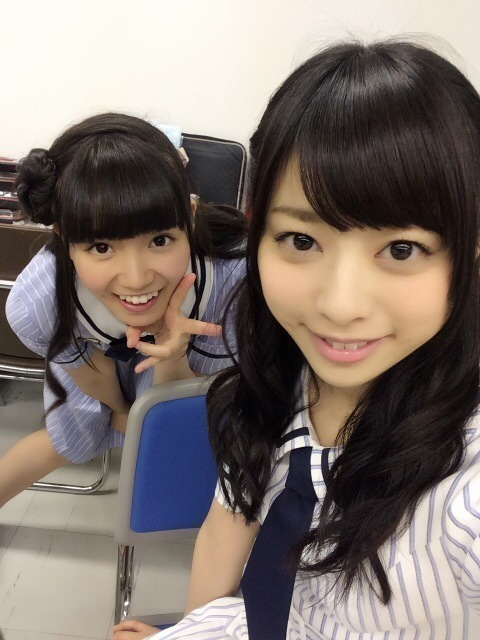
ねねちゃん
今日みんなでパン屋さんの話で
盛り上がったよ！
ひめたんねーちっちゃい頃ねー
パン屋さんになりたかったんだー
あーそれねー
誰もが一度は通る道だよねー
あたしは今でもパン屋さんになりたいよー
みたいな( ˘ω˘ )
ひめたんの二の腕には
愛と夢とりぼんが詰まってるって
いこたんが言ってたよ！

 乃木坂でスクフェスやってる
乃木坂でスクフェスやってる
(またはやってない)人は誰ですか〜？？どっち答えたらいいのん(´・ω・｀)笑
やってる人は ずーさん、あすかりん、
愛未、ちーちゃん、ゆったん、きいちゃん
は知ってるよ！もうちょいいるかも。
僕は映画が好きで特にホラーが好きなんやけど、
ひめたんはホラーとか見れるー？自分から好んで観ないかなあー
でも愛未、かなりん、ねねのやつは観たい！
なんかうちわに入れて欲しい文字とか、
うちわでこうゆうの嬉しい！とかゆうのある？ひめたんってわかれば
何でも嬉しいよー(﹡֦ƠωƠ֦﹡)♡
ライブ楽しみにしてるね！
自分で文字貼ってつくったうちわ
もってってもいいの？それとも公式じゃないとやめたほうがいいのかな公式のやーつもあるんだよねー
どっちでもおっけーだよ(﹡֦ƠωƠ֦﹡)るん
こないだ急に僕のメガネのレンズが
外れたんだけど、これって僕の目からも
ひめたんびーむが出てるのかな？中二......なんでもないです
それ大丈夫なのー
何があったのーてかウソはやめてよおおおん
ひめたんはそうめん派？
それとも冷やし中華派？そうめん派！
冷やし中華ならごまのやつがいいです
酸っぱいのはちょっと苦手です
今度、イベントいって、
ひめたんにあいにいってもいいー？わーい(﹡֦ƠωƠ֦﹡)待ってるー！
まりっかが、きゅんきゅん王国のみんなに
ブラックひめたんの件で助けを求めてるけど(笑)
手を差し伸べてあげた方がよいのかな？
俺的にはきゅんきゅん王国のお姫様に
いじられるなんて羨ましい限りなのだが(笑)ブログのやつはフリでしょー(笑)
万理華はいじられるの嬉しい人だから
愛を持っていじってあげてね( ˆωˆ )けっ
愛を持って、だからね、これ大事♡
ひめたんの日記の
コメント欄下２ケタに46を踏んだ方へ
手書きでコメ返するコーナー
＼ ひめたん46 ／
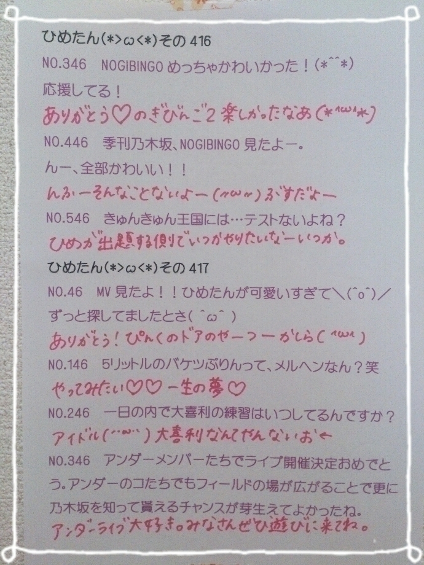
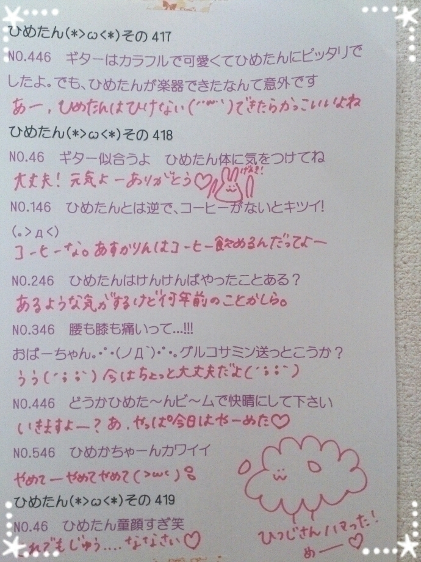
3月のやつ！
いつもたくさんのコメント
ありがとうございます
めーるのお返事も嬉しいー♪
髪型のリクエストいっぱいありがとう♡
あ、ちなみに
おでこ出してーってのはちょっと厳しいかな(￣ω￣)
いや、違うのよ、
ここまで頑なにおでこ出さないのは
もちろん理由があるのよ
多分ね、
でこだしひめたん見た瞬間に
7割のひとは幻滅すると思うの
いやこれまじだから！
リクエストしたこと
後悔するから！まじで！
(＊´・ω・＊)
ぼんそわー( ´ ▽ ` )ﾉ
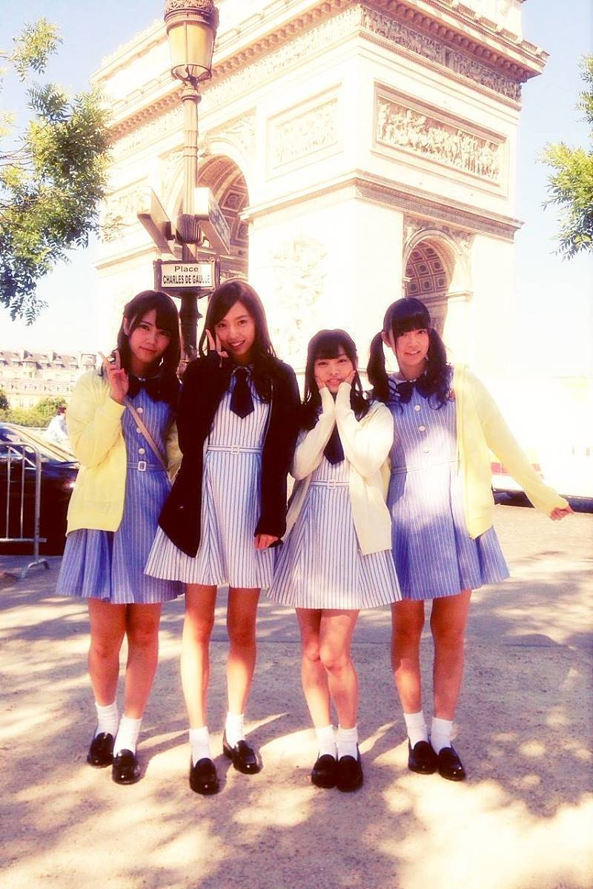
とゆことで
のぎ天#3配信されましたが
みなさんもう観てくれたかな？
この4人でパリに行ってきました！
先に情報がまわっちゃってたみたいで
握手会でも
「ひめたんパリ行ったんでしょ？」
みたいな感じでいろんな方に聞かれて
でも私の口から
情報解禁できるはずがなく
オンエア観てね、しか言えませんでした......
ああ苦しかった(´;o;`)
乃木のの若月・秋元回で
「ふたりはパリ行ったんだねーいいねー」
とか言いながら
街にダストボックスいっぱいあるのは
ひめたんも見てきたよー(笑)
のぎ天#2#3では
ボウリングをしたわけなんですが
ひめたん意外と上手だったみたい♡
最高スコアいくつ？って
いろんなひとに聞かれたけど
まずプライベートでボウリング行かないから
わかんないんだよねー
一緒に行くひとはーい( ´ ▽ ` )ﾉ
来週はパリ編！
アンダーメンバー全員集合してます
きいちゃん(北野日奈子ちゃん)が次回
初のぎ天＼(^o^)／
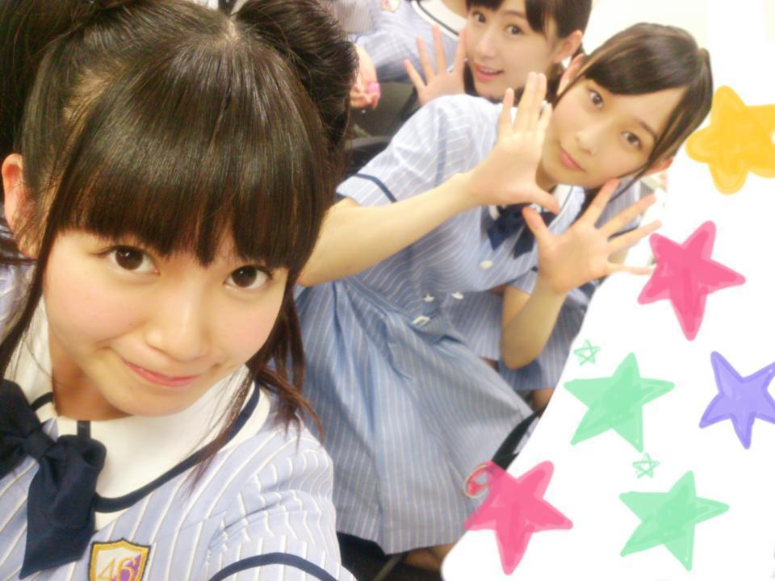
前回の日記にたくさん
アンダーライブのコメント
ありがとうございましたっ
行ったよってひとからは
楽しかった！感動した！って
嬉しいお言葉をたくさん(´,,•ω•,,｀)
お留守番ちーむのみなさんにも
レポ見てて楽しい気持ちになった！とか
ライブ成功して僕も私も嬉しいですって♪♪
そう、
前回の日記に書いてなかった
とっても大事な報告。
きゅんきゅん王国のみなさんっ
ぴんくのサイリウムも
ひめたんうちわも
ひめたんタオルもちゃんと見えたよ！
ひめたんTシャツも
ひめたんりぼんも
ひめたんとお揃いのついんてーるも！
ひめたんコールも
ひめたんびーむの「わー♡」も全部届いたよ！
ライブにたくさん元気もらいました
いつも本当にありがとう( ´ ･o･｀)らぶ
それからね、
ひめたん他の髪型もしてよーって方も
いらっしゃるので
公演中どうしよっかなって悩んだんだけど
やっぱりたくさんいるメンバーの中から
ちょっとでもはやくひめたんを見つけてほしくて
10公演一貫してついんてーるにしたの⌒ﾟ( ･ᴗ･ )ﾟ⌒
他の髪型みたいーって方は
個握とかでやろうと思うので
なんかあったらリクエストまってるよー♪
そして、他のメンバー推しだけど
ライブ見てたらひめたん気になってきたあああぁあ
ってゆそこのあなた！
きゅんきゅん王国はいつでも大歓迎だよ( ^O^ )♡
にゃん
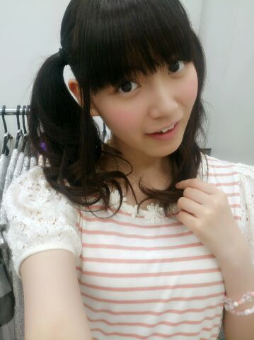
いつかのライブ中に
ひめたんは永遠の17さいって
宣言してしまいました＼(^o^)／てへ
前回の乃木ののは
ねねころ(伊藤寧々ちゃん)
まりか(伊藤万理華ちゃん)でした☆
いやー伊藤ちゃんず揃いましたねー
中元さんと伊藤さんのなかいさん回でした！
ひめたん高圧的だったねー
今週はひめたんパキパキしてた気がする(笑)
きゅんきゅん王国には
ラブリーひめたん支持派と
ブラックひめたん支持派がいるらしい......うー
次回もお楽しみにっ
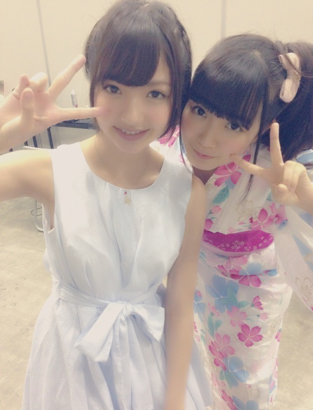
愛されまあや♡
まあや(和田まあやちゃん)とふたりで
FRIDAYさんに取材していただきました
そうです広島コンビ！
8/15発売です( ´ ▽ ` )ﾉ
近くなったらまたお知らせさせてくださいっ

 ひめたんはスクフェスランクいくつ？
ひめたんはスクフェスランクいくつ？47？とかそれくらい
まだまだな新参者(´・ω・｀)
みんな教えてくれてありがとねー♪
ひめたんの前には、川に溺れたまなったんと、
水たまりに落ちそうなピンクのリボンがあります。
どっちを最初に助ける？？(そ、そ、そんなの言うまでも......)
 すきなお洋服のブランドは？
すきなお洋服のブランドは？LIZ LISAとか
LODISPOTTOとかかな
でもあんまりお店にこだわらないで
いろんなとこでショッピングするよー♪
ひめたんびーむの印税は
どれくらい貰っているんですか？みんな許可なしにびーむやるからなー
ほんとはみんなもびーむ好きなんだな
愛されてんな、ひめたんびーむ(<・ω・>)
ひめたんの日記の
コメント欄下２ケタに46を踏んだ方へ
手書きでコメ返するコーナー
なんですが、みなさんお気づきかと思いますが
これだいぶタイムラグ生まれちゃって
今日貼るやつも2月とかのなんだよねー
ほんとごめんね(´・ω・｀)
できるだけタイムリーにしたいから
今日から3枚貼るよ！
＼ ひめたん46 ／
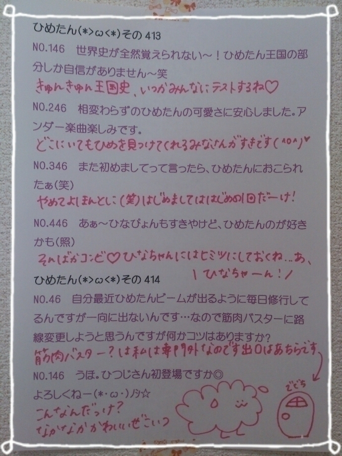
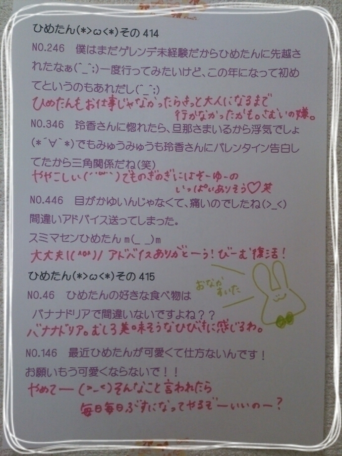
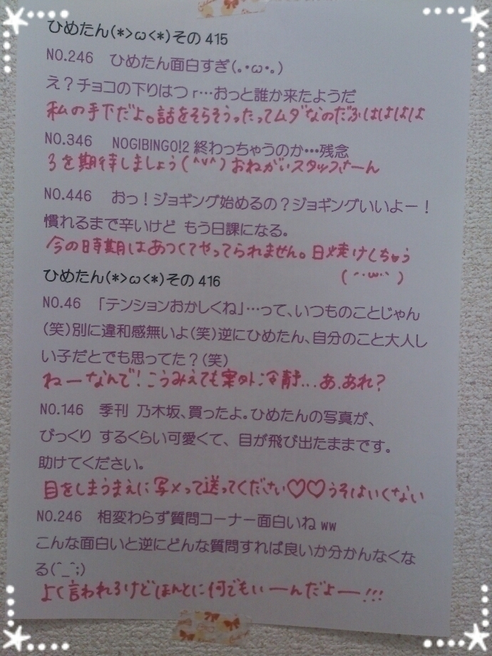
いつもたくさんコメントありがとう！
ライブの感想のほかにも
乃木のの・MV・のぎ天やラブライブトーク
読んでて楽しい＼(^o^)／
SamuraiELOさんは
チェックしてくれたかな？
男性の夏コーデについてお話したよー☆
AKB新聞さんにもチラッと載ってるので
ぜひお手に取ってみてねー
次回の乃木どこは10th選抜発表！
珍しくひめたんが
ついんてーるしてないお⌒ﾟ( ･ᴗ･ )ﾟ⌒
(＊´・ω・＊)
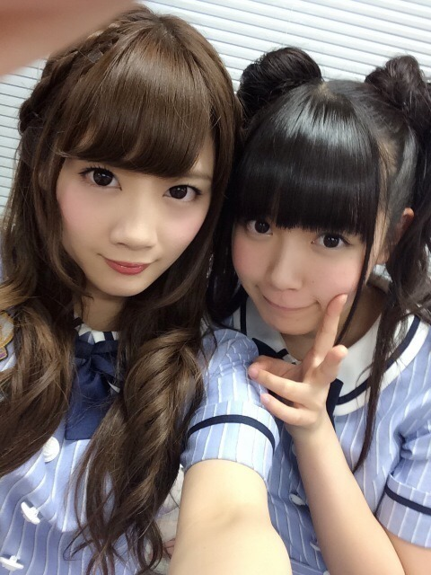
9thアンダーライブ全公演終了！
来てくださったみなさん
応援してくださったみなさん
本当にありがとうございました！！
まずはお待ちかね
ユニットコーナーですが
みなさんから投票をもとに組んだ
スペシャルユニットのうち
ひめたんが携わったのがこちら☆
1位:せっかちなかたつむり
万理華、川後、北野、永島、山崎、中元
この曲歌うの楽しいのん♡
曲中でひめたんコールがいっぱい届いて
歌っていて本当に気持ちよかったです
堂々の第1位でした！投票ありがとう！
3位:ダンケシェーン
かりん、川後、北野、中田、永島、和田、中元
安定の盛り上がり。この楽曲は本当に愛されてる。
みなさんの合いの手が揃ってる揃ってる！
前回とはまた違うメンバーで披露できたのが
ひとつアンダーライブらしさかな
みなさんダンケシェーン！
6位:渋谷ブルース
川村、中元
乃木坂の歌姫・ろってぃーとふたりで
披露させていただきました(´;ω;`)
ろってぃーとひめたんのふたりで
渋谷ブルースを是非歌ってほしいって意見が
本当に多かったんだよってスタッフさんから聞いて
光栄です。嬉しかったなあ。
いつかろってぃーとデュエットするのが夢でした
みなさん私の夢を叶えてくれてありがとう。
「海流の島よ」「やさしさとは」
「コウモリよ」は
ひめたんはオリジナルメンバーとして
参加させていただいて
私にとってとても大切な曲なので
このライブで選ばれた人には
精一杯やってほしいなって思ってました
特に研究生さんたちは
今回がユニットコーナー初参加だったので
短い期間でよくここまで仕上げてくれたな、と。
3組ともパフォーマンス本当によかった！！
私も負けてられないなって刺激を受けました。
千秋楽は せーらーむーんへあ♡♡
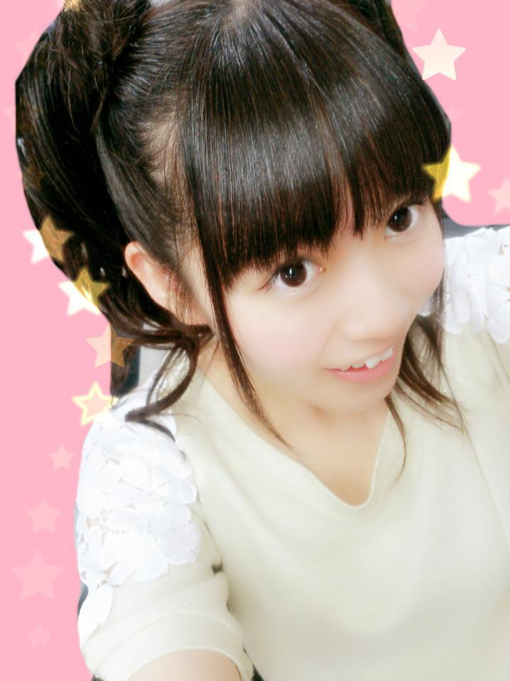
どう？私の本気伝わる？
ということで10公演やってきたわけです
ああ終わっちゃった(´-ω-`)
寂しいけれど総括を書いてみよっかな。
プリンシパル直後からリハ初めて
この1ヶ月間はオフの日も気が気じゃなくて
毎日アンダーライブのこと考えてました
最初は覚えること多いし
間違えたらどうしよう、とか
選抜いないけど大丈夫かな とか
不安なことばかりで
楽しむのが後回しになったり
幕が開いてから閉まるまで
自分のパワーバランスを調節するのが
なかなかできなかったり。
毎公演終わるごとに
怒られて、反省して、悩んで、反省して、
その繰り返しだったなあ
でも回を重ねるごとに
楽曲の中で、MCで
何か仕掛けてやろうとか
どんどん悩みの質があがってきたり
それぞれの改善点を
お互いに見つけて言い合える環境ができて
ああ、このチームいいなって。
いつかも書いたけど
アンダーメンバーの
もっと良いものを作ろう！って
ハングリー精神が心地よかった＼(^o^)／
向上心のある子ばかりで
ほんとにメンバーのこと改めて尊敬した！
アンダーライブは
いつもの乃木坂のライブと違って
会場も大きくなければ、特別な仕掛けもなくて
つまりパフォーマンスのみでしか
ファンのみなさんの心を動かせない
だから毎回ライブの出来は
その日の私たち次第で大きく変わっちゃう
それがアンダーライブだなって私は思っていて。
故にパフォーマンスには
いつも以上に力を入れたつもりです
ボイトレは普段以上に念入りにするとか
立ち位置や歌詞や振り付けを
ひとりひとりが完璧にして本番に臨むとか
もちろん歌手としては当たり前のことなんだけど
今までの私たちの認識は甘かったのかな
その辺の基礎を徹底するように心がけました
すべては、
このアンダーライブを通して
ひとりでも多くのひとに
乃木坂のアンダーって選抜に負けてないじゃん！
って思ってもらいたいから。
「メディアの選抜、ライブのアンダー」
いつかみなさんに
そう認めていただける日が来るといいな
今回のライブを通して少しは力ついたかな。
素直な子ばかりで
みんなで順番にリーダーシップをとれる
ここぞって時には団結できる
9thアンダーにはそんな印象をもっています( ˘ω˘ )
このメンバーでライブできてよかった！
みんな本当にお疲れ様でした！
みおちゃん(堀未央奈ちゃん)がゲスト出演、
わかつき(若月佑美ちゃん)
まなつ(秋元真夏ちゃん)
ななみん(橋本奈々未ちゃん)が
観にきてくれました！ありがとう！
次は真夏の全国ツアー
選抜メンバーも一緒です。
乃木坂46みんなで力を合わせて
ステキなライブにするので
ぜひ会いに来てくださいね(*'v'*)！
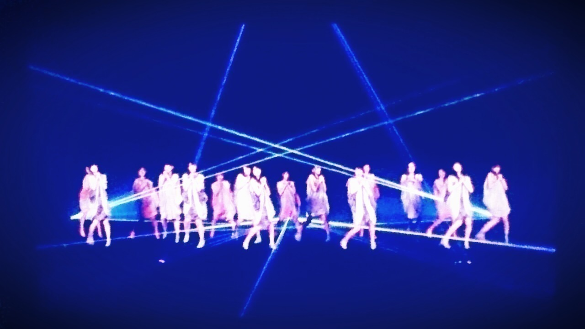
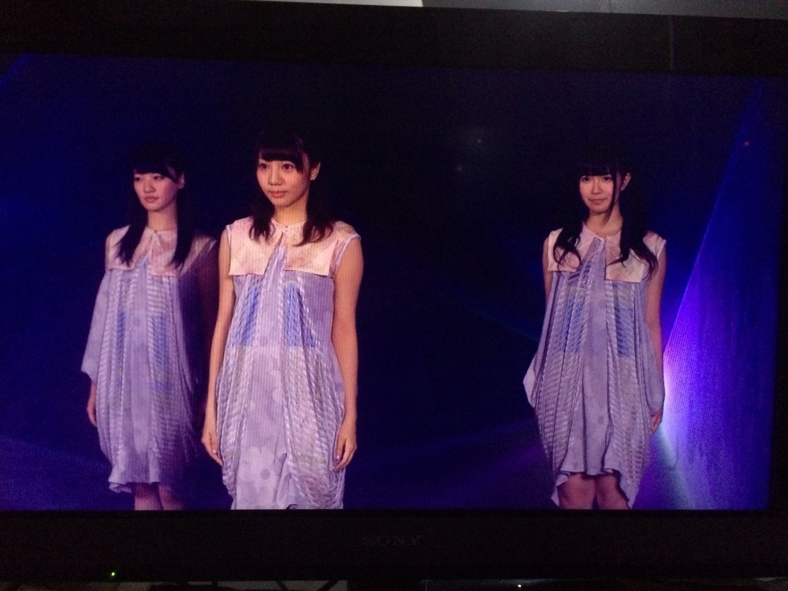
昨日 乃木坂46youtube公式チャンネルで
解禁になりました
「ここにいる理由」Music Video Dance Ver.
今までにない
フォーメーションダンスに挑戦してたり
歌衣装やパート分けが確認できたり
ダンスバージョンでは
通常のPVとは雰囲気の違う
「ここにいる理由」を観ていただけます！
のぎ天#3 更新されたよ＼(^o^)／
まだみてない人もいるかもだから
詳しいことは次回のブログに書くー♪
ひめたんの日記の
コメント欄下２ケタに46を踏んだ方へ
手書きでコメ返するコーナー
＼ ひめたん46 ／
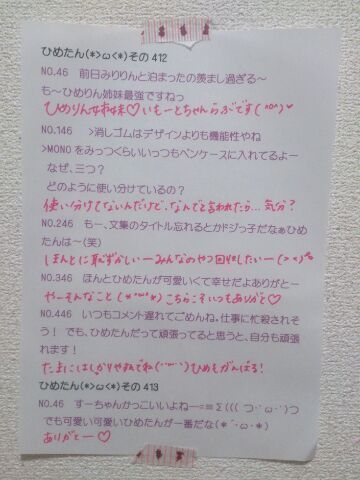
明日は乃木のの！伊藤ちゃんず！
(＊´・ω・＊)
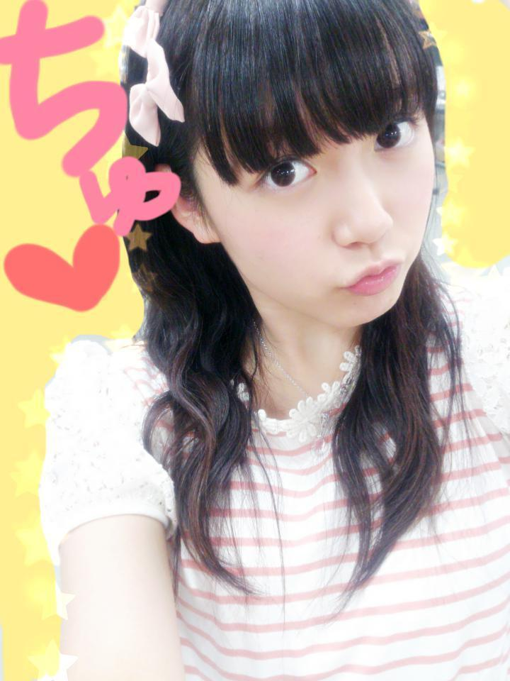
月曜日は幕張個握☆
遊びに来てくださったみなさん
ありがとうございました！
1部＊ベレー帽 × ウェーブおろし
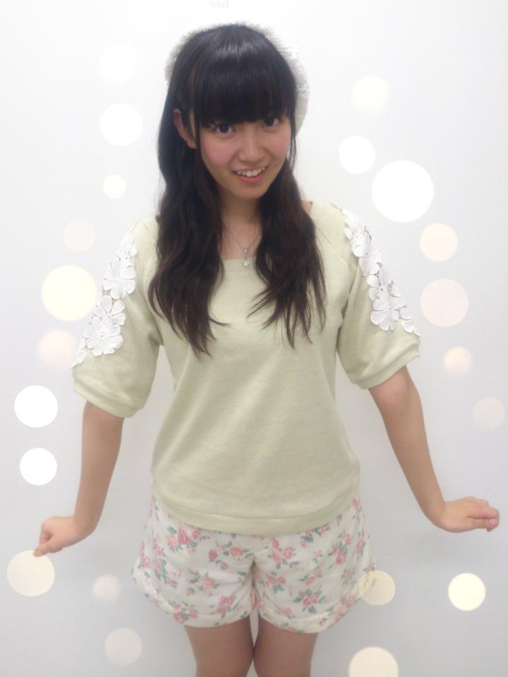
2部＊ネコちゃんへあ × りぼん
3部＊お人形さんへあ × りぼん
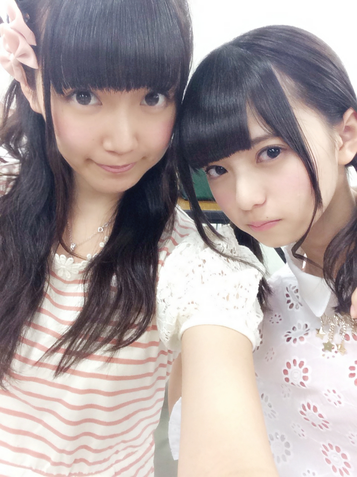
みんな大好き格差社会コンビ。
ちなみに、この日記の
1枚目の写メが2部
3枚目の写メが3部なんだけど違いわかるかな？
わかんないよね( ¯•ω•¯ )
ってか写メの頭の方切っちゃだめよね( ¯•ω•¯ )ごめん
おにゃのこちゃんたち
りぼんをしてきてくれる子は
前からたくさんいるんだけどね
最近はひめたんのついんてーるも
真似してくれる子が増えて
ひめたん嬉しいの ⌒ﾟ( ･ᴗ･ )ﾟ⌒ ♡
ほかにも巻き髪とか編み込みとか
おにゃのこひめきゅんさんは
女子力がお高いようで。
ぼーいずひめきゅんさんも
ぴんく率・蝶ネクタイ率・名札率が
グングン高くなってきて
みんな意識高いよね！
さすが、ひめのこと
よくわかってらっしゃる
ひめは嬉しいです ⌒ﾟ( ･ᴗ･ )ﾟ⌒
ひめは名札をいつも忘れちゃうんだよね
ごめんね、次こそは持ってくるね
次こそは......
8th最後の握手会ってことで
この8th期間を振り返ってみようかな
初めて3部になった今回の握手会。
部数が増えたことは嬉しい反面
みなさん来てくれるかなー？
そんな不安もありながら始まった8th。
おとといは
ほんとにたくさんの方が
会いに来てくださって嬉しかったの( ;o; )♡
あ、朝は寂しかったよー(笑)
寂しすぎてみなみとふたりで
ずっと遊んでたんだからねー(笑)
お寝坊さーんは
大変だと思うけど早起き頑張ってー
ひめたんも頑張るからー！
次からは......って
ちょっと始まってるけど
9thは関東4部制になります( ˘ω˘ )
きゅんきゅん王国のみなさん
ひめは待ってるからね♡
きゅんきゅん王国さんじゃないけど
ちょっと気になるなーってあなたのことも
もちろん待ってるよー！
あっそうそう
いろんなレーンで
びーむが流行ってるらしいけど
本家が一番よ！負けないよ♡笑
そしてれなりん卒業おめでとう( ;o; )
れなりんはお勉強との両立を
ずっと頑張っていたよね
それで悩むことも多かったと思います
でもね、これはほんとに言いたい
のぎのぎには
学業との両立が課題な子もたくさんいるけど
少なくとも私は
れなりんがこんなに頑張ってるんだから
私がめげちゃだめだっていつも思ってました
多分私だけじゃなくて
ほかのみんなもそうだと思う
寝れないーとか疲れたーとか
テスト期間の辛い時も
れなりんはもっと辛いはずって
私なんてまだまだじゃないかって。
頑張るきっかけをくれたのは
いつだってれなりんだったんだよ！
ひめたんも乃木坂ファミリーさんみんなも
れなりんのことずっとずっと
応援してるからね☆
3年間お疲れ様でした＼(^o^)／
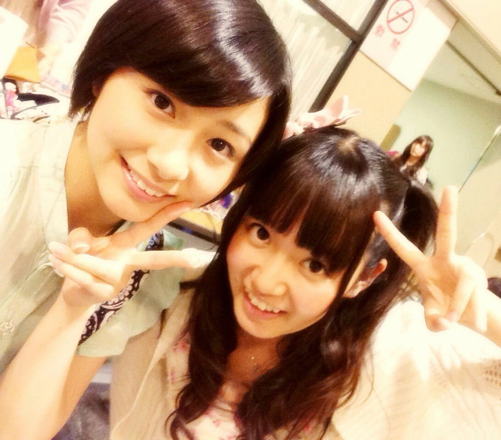
前回の乃木ののは
まなつ(秋元真夏ちゃん)
わかつき(若月佑美ちゃん)でした☆
どうでしたか？
先週よりしっかり進行しようと
頑張ってみたけどいかがでしたか(・∀・)？
まなつがラジオの中で言ってた
「モニマルズ」とやらをあとでググったら
なんだか可愛かったの
あんなに真夏さんのことばかにしたけど
近々こっそりおもちゃ屋さんに行こっかな。
あ、若月も一緒に行きたいね(〃ω〃)
若月がおもちゃ屋さん(〃ω〃)
あー絶対かわいい絶対可愛いよー♪♪
次回はお待たせしました！
伊藤寧々ちゃん
伊藤万理華ちゃんです☆
みんな待望の伊藤ちゃんずが
始めて乃木のので揃ったよ＼(^o^)／
記念すべき回にひめたんも立ち会えて嬉しい！
次回もお楽しみにっ
ねー見て！
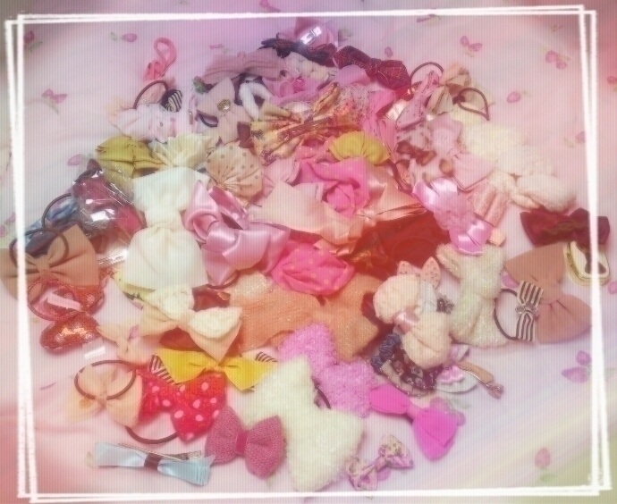
ひめたんのりぼんコレクションがついに
100個達成⊂( ˆoˆ )⊃♡
記念すべき100個目は
ひめたんままからのプレゼント
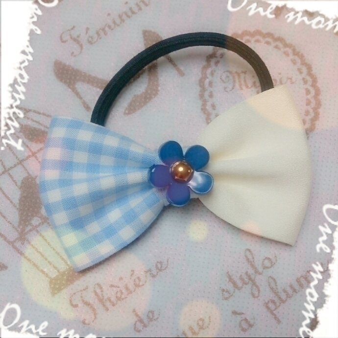
こーれっ
ひめたんのコレクションが
基本的に白とぴんくばっかだから
100個目はちょっと冒険してみようと思って。
これからもりぼんを愛でるぜ⊂( ˆoˆ )⊃

 東京喰種見た⁇
東京喰種見た⁇
見たとしたらどうだった⁇ちょっとこわい系って聞いて
気になってるけど
まだ観てないんだよね(´・ω・｀)
どんな？やっぱ面白い？
ひめたんはラブライブの楽曲で何が好き？夏色えがおで1,2,Jump!
Music S.T.A.R.T!!
知らないLove＊教えてLove かな♪
髪の毛のケアなにしてる？？一番は美容院でこまめに
トリートメントしてもらうと
つやつやになるよー
あとはJILL STUARTのヘアオイルがおすすめ。
ねー気づいた？
スマホごちゃごちゃしてたら
写メ貼れる枚数増えた(ﾉ)･ω･(ヾ)
やったあ♡
もっといっぱい撮んなきゃー
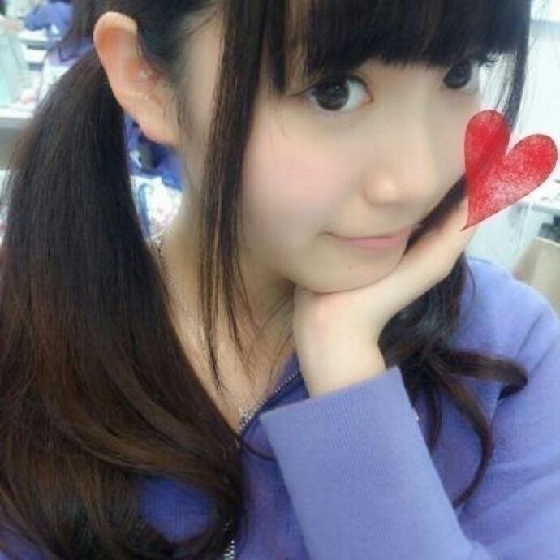
ラブライバーさんからのコメント嬉しい！
スクフェスは今キャンペーンやってるんだよね！
ことりちゃん何人でも入部してほしい！
スクフェスやってるよってひと
今ランクいくつー？
明日発売のSamuraiELOさんに
載せていただいてます！
(＊´・ω・＊)
昨日は京都で全国握手会でした！
ライブがなくて
握手のみという新しいスタイル
いかがでしたか？
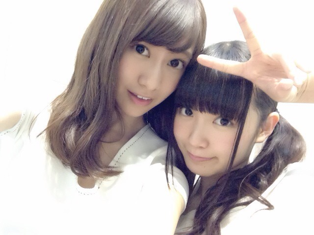
握手は玲香(桜井玲香ちゃん)とペア！
玲香ファンのみなさん
仲良くしてくださって
ありがとうございました(＊^ω^＊)
玲香とペアになるのは2nd以来で
お久しぶりーの方もいらっしゃったけど
はじめましての方が多かった気がする！
ひめきゅんさんもたくさん来てくれて
ほんとにありがとう♪♪
関西にお住まいのみなさんは
久々に近くまで会いに行けてよかった☆
今回は日帰りだったから
あまり京都を満喫できなかったけど
それでもみなさんに会えて嬉しいかったよ！
おじゃましました( ´▽` )ﾉ
遠征ちーむのみなさん
遠くから会いに来てくれてありがとう！
京都に行く日は
いつも雨降ってる気がする
今日も途中降ってたみたいで心配(´・ω・｀)
今度京都行くときは晴れますよーうに☆
ひめたんびーむしようとして振りかぶった私と
ほっぷすてっぷしようとした振りかぶった玲香が
衝突するってことがありました( °ω° )
な、なんてアクティブなレーンなんだ( °ω° )はう
予定していたライブが
中止になってしまった分
何か楽しいことできないかなーって
サイン入りグッズプレゼント
トークコーナー
のど自慢大会決勝(但し予選なし)
と いろんな企画コーナーがありました！
ひめたんは
のど自慢大会決勝(但し予選なし)で
「翼の折れたエンジェル」を歌いました！
何でこの選曲？ってたくさん聞かれたけど
この曲 好きなのーp(^^)q
NOGIBINGO!の「TOMORROW」とか
乃木のので話した「フレンズ」とか
自分が生まれる前の歌も意外と知ってる♪
あんなにたくさんの方の前で披露するの
緊張したなあー
あいかわらずピッチが不安定だったけど
でもみなさんが盛り上げてくださって
あたたかい会場の雰囲気に救われました( ;o; )♡
みさ先輩の歌とってもステキだったよー！
こんな感じで、昨日は
ライブがなくて残念な思いをさせてしまった方
少しでも楽しんでいただけてたら嬉しいです。
今後の全握は
どんな感じになるかわかんないけど
企画コーナーする機会があったら
楽しみにしててくださいね☆
いつものライブも
早く復活しますように......
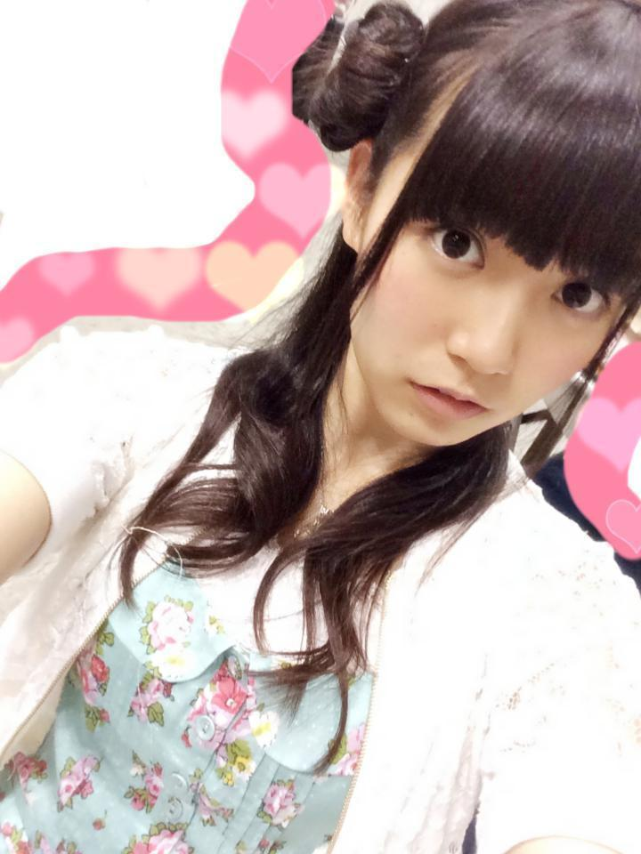
前回の日記に貼りきれなかった
2部のワンピース
こーんな雰囲気でした！
このヘアみんなに誉めてもらったの
んふふ>゜)))彡
そして
のぎ天#2更新されました
みなさん観たかなー？
ボウリング対決前編！
まだ観てないって方もいるかもだから
今からネタバレするのもあれかな？
次回の日記に書くね♪
最後に、
かずみさん(高山一実ちゃん)の
ブログ読んだー？
ラブライブのスクフェス私もやってるよー
ずーさんが教えてくれたのー
ラブライブ、元々は
アニメとか観てない人なんだけど
これを機にラブライブ大好きになったー♪
ひめたんはことりちゃん推しですっ♡
スクフェスでは
スマイル属性URにこちゃんにお世話になるよ！
彼女はとっても優秀だよ！
にっこにっこにー！
ラブライバーさんよかったら
今度語りましょう／(^o^)＼

 学校でブレイクするためには
学校でブレイクするためには
どうすればいいですか！？難しい質問(・∀・)ｷﾀ
そうねーブレイク......かあーなんだろうね
けん玉とか習得したらいいんじゃない？(適当)
ひめたんはどの高さのツインテールがすき？？耳ちょい上！これマスト！
メイクさんにいつも
耳ちょい上ってオーダーします
ひめたんは、池・沼・湖・川の
何処に一番いますか？
また、エサは何を選べば良く釣れますか？選択肢......ナメられたもんだぜ☆
サイリウムは
ピンクが好きなひめたんに質問です！
コールする時なんて呼ばれたいですか？ぴんく好きー(＊^^＊)
「ひめたん！」が呼びやすいんじゃないかな
もっと良いの思い付いた人は提案待ってます
でも「ひめたん！」って聞き取りやすいよ。
ひめたんは男の子だったら甚平と浴衣
どっち着たい？？甚平！甚平の方が楽！
なんとなく、浴衣は着せてくれる人がいないと
自分で着るの難しそうだよね
ひめたんのことだからすぐ崩れちゃいそうだし......
ひめたんサイリウムぴんくだよね？
ひめあしゅ推しの場合
何色持てばいいかな？？（笑） 格差社会(←私と飛鳥のユニット名)推し！嬉しい！
水色 × ぴんく
しろ × ぴんく のどっちかはどうかしら？
あの、ね、
ひめたんのことちょっとでも好きなら
ぴんくは準備してくれたら嬉しいなーなーんて。
ひめたんの日記の
コメント欄下２ケタに46を踏んだ方へ
手書きでコメ返するコーナー
＼ ひめたん46 ／
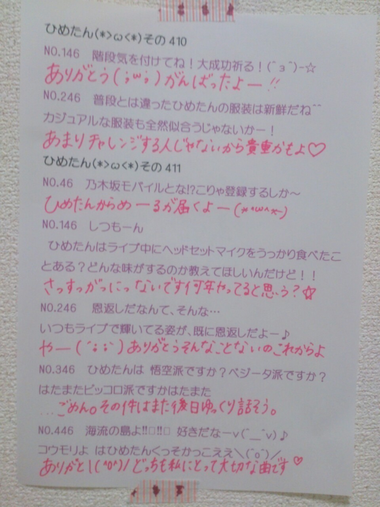
いつもたくさんのコメント
ありがとうございます
浴衣が好評だったみたいで(＊´ω`＊)
恐るべし浴衣マジック。
また機会があったら着ようかな......
乃木ののの感想待ってるよー♪
明日は個握よろしくお願いしますっ！
(＊´・>・＊)